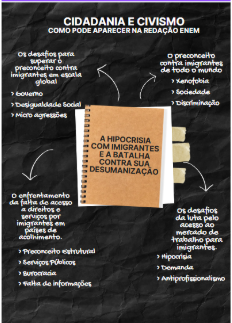

Temas para redação do enem

Cidadania e Civismo
Tema: “A seletividade social na aceitação de imigrantes: desafios da hipocrisia contemporânea”
Argumento de autoridade:
Para o sociólogo Zygmunt Bauman, “o estrangeiro é uma figura que incomoda porque carrega em si o desafio do convívio com o diferente”. Essa reflexão ajuda a compreender a raiz simbólica da intolerância contra imigrantes: mais do que fatores econômicos, o que alimenta essa rejeição é o medo do desconhecido e a insegurança frente ao que foge à norma social estabelecida. Isso explica por que profissionais estrangeiros de elite são aceitos, enquanto imigrantes vulneráveis são alvos de exclusão.
Argumento histórico:
O preconceito contra imigrantes não é recente. Na história do Brasil, por exemplo, políticas de “branqueamento” da população favoreceram a entrada de europeus, enquanto afrodescendentes e indígenas foram sistematicamente marginalizados. Essa herança reflete-se ainda hoje, com a valorização de profissionais estrangeiros de elite, em contraste com o preconceito contra imigrantes pobres e racializados.
Argumento de exemplificação
Muitos imigrantes que atuam no Brasil como médicos, engenheiros ou técnicos vieram fugindo de guerras, crises econômicas ou exploração colonial, como no caso de haitianos e venezuelanos. Apesar de sua contribuição ao desenvolvimento nacional, são alvo de preconceito, violência e discursos de deportação, enquanto profissionais estrangeiros de países centrais são exaltados.
Argumento de comparação:
A sociedade demonstra hipocrisia ao aceitar calorosamente estrangeiros altamente qualificados, exaltando suas competências, enquanto imigrantes em situação de vulnerabilidade são vistos como ameaça. Essa contradição escancara o viés seletivo com base em classe, origem e raça.
Argumento de raciocínio lógico
Se tanto imigrantes vulneráveis quanto profissionais estrangeiros contribuem economicamente para o país, a rejeição seletiva ao primeiro grupo revela que o problema não é econômico, mas sim social e cultural, alimentado por preconceitos estruturais. Logo, o combate à hipocrisia passa pela revisão crítica de discursos sociais e políticos normalizados.